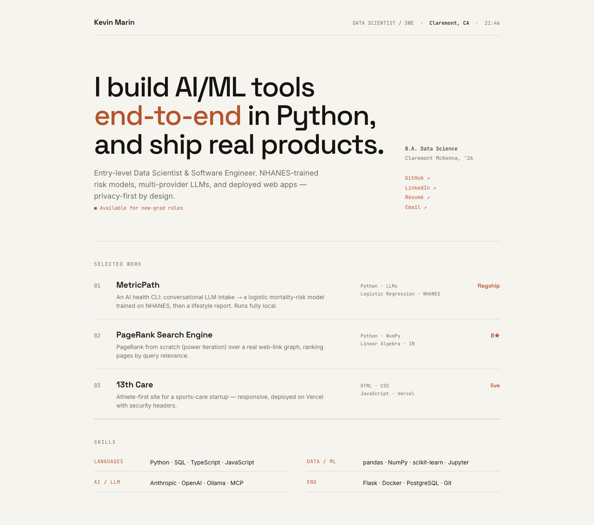
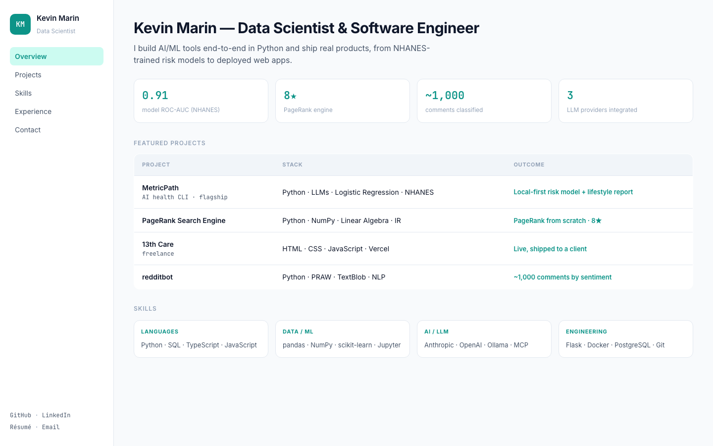
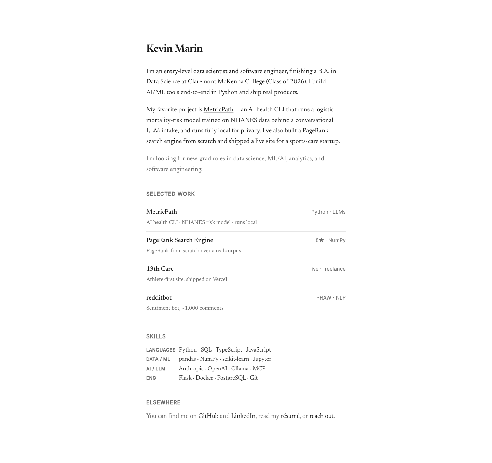
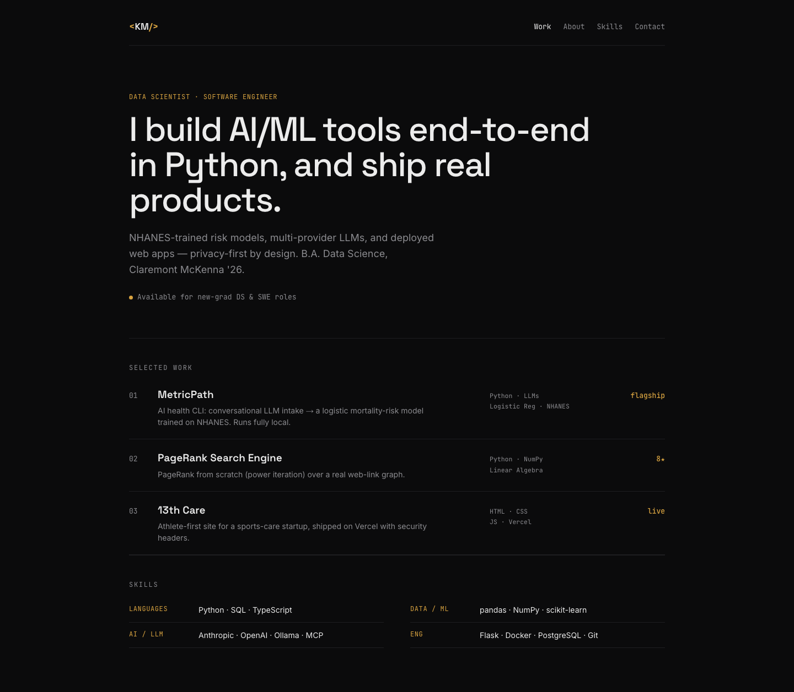

Four options, all built with your real content. Click any to open it full-screen. Tell me the number (or mix two) and I'll build it into the real site.

Warm paper, big grotesk type, one clay accent, hairline rows. The clearest break from the AI-template look; reads senior.

Light sidebar, teal/slate, KPI tiles + a Project | Stack | Outcome table. Most "data person" — sharp for DS/Analyst/BI.

White, serif, prose, narrow column. Maximum restraint, quiet-confidence energy (leerob.io style).

Neutral near-black, amber accent, minimal. Keeps a dark theme but kills every AI tell (no gradient/3D/typewriter).